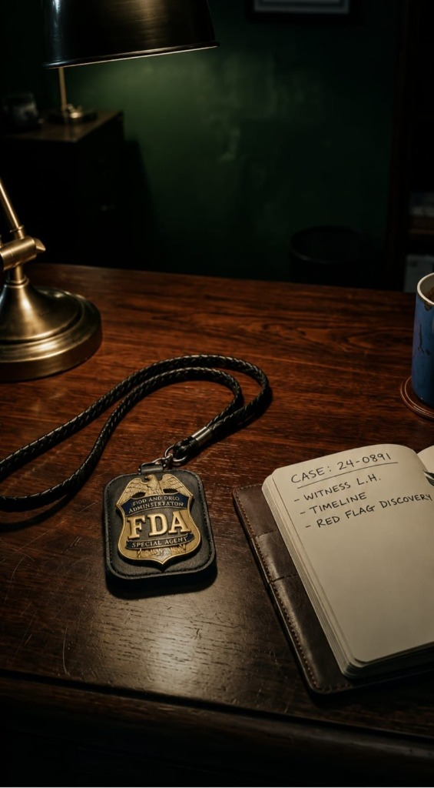

INTERNAL DOSSIER: THE STRATEGIC PLAYBOOK
Beyond the Badge
An Ex-FDA Consulting Playbook
How Former Regulators and GxP Leaders Build Credibility, Judgment, and Longevity in Consulting.
How Former Regulators and GxP Leaders Build Credibility, Judgment, and Longevity in Consulting.

Stepping out of the FDA and into the private sector isn't just a change of scenery—it's a fundamental shift in identity. Many former investigators struggle to translate their authoritative technical expertise into the strategic advisory role required by the industry.
The playbook addresses the unique challenges GxP leaders face during this transition, bridging the gap between raw regulatory oversight and nuanced consulting excellence. This is the blueprint for maintaining your investigative rigor while delivering high-value business outcomes.
Go beyond finding faults. Learn to synthesize regulatory findings into actionable, long-term business strategies that safeguard compliance and accelerate growth.
Leverage your years of field inspections and GxP leadership as a catalyst for cultural change within pharmaceutical and medical device organizations.
Establish yourself as a trusted authority. Master the communication nuances that differentiate a successful consultant from a standard auditor.
Consulting is not about having the answers; it is about having the judgment to ask the questions that uncover the truth behind the data. That is the essence of 'The Badge'.

Former FDA Investigator & Global GxP Consultant
Sereen is the Founder of SMM Arete GxP Consulting Services, bringing decades of frontline regulatory experience to the world's most complex compliance challenges. Having served inside the agency and advised global pharmaceutical leaders, she offers a rare 360-degree perspective on quality and strategy.
Through "Beyond the Badge," Sereen shares the distilled wisdom of her career, providing a roadmap for the next generation of regulatory consultants to achieve excellence and longevity in their practice.